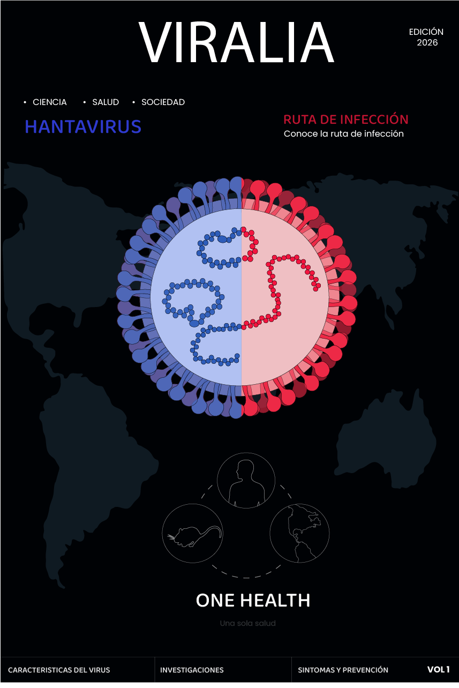
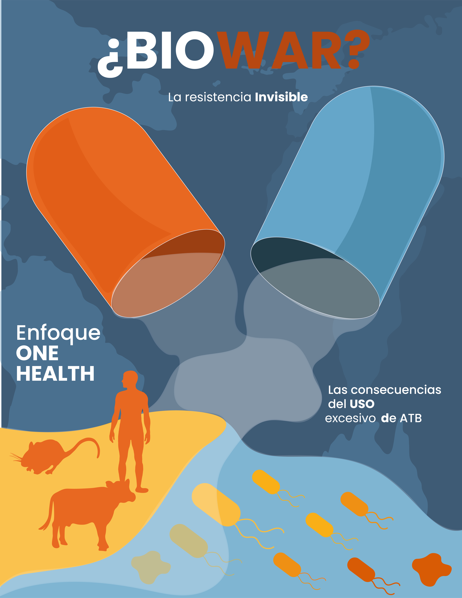
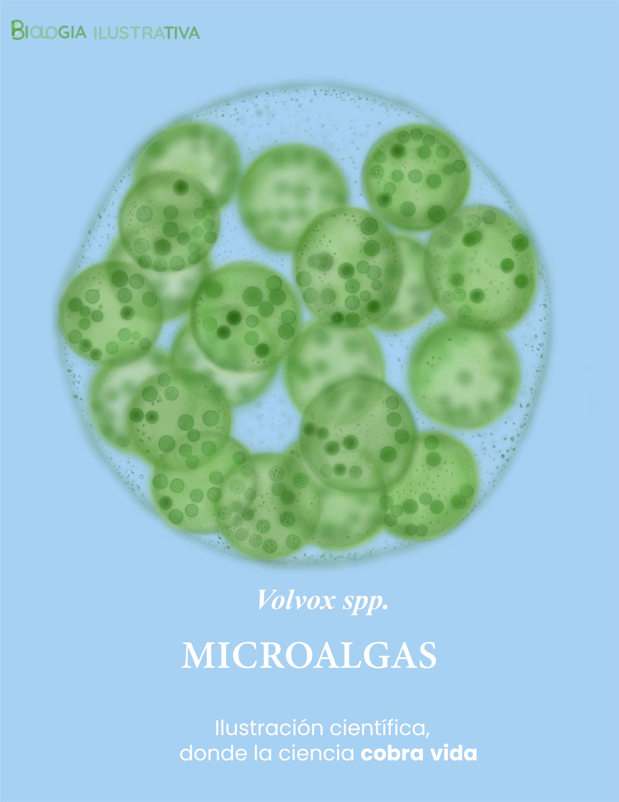

Proyectos
Ilustración científica, diseño editorial y divulgación visual — trabajo donde el rigor científico y el criterio estético son inseparables.

NuevoViralia — Mini revista sobre Hantavirus
Publicación editorial sobre el Hantavirus con enfoque One Health. Portada con ilustración bicolor del virión (ARN positivo/negativo), mapa mundial de distribución, ruta de infección, sintomatología y prevención.
Ver proyecto →Microcosmos — Atlas Visual del Mundo Microscópico
Revista digital de 12 páginas sobre microbiología con ilustraciones científicas propias, infografías de ciclos de infección y microfotografías reales de laboratorio. PDF interactivo con hipervínculos activos.
Ver revista →
Nuevo¿BioWar? — La resistencia invisible
Afiche de divulgación sobre resistencia antimicrobiana con enfoque One Health. Cápsulas vacías, bacterias resistentes y variaciones de color representan la pérdida de eficacia de los antibióticos y su impacto en la salud humana, animal y ambiental.
Ver ilustración completa → En proceso
En proceso
Cartilla educativa — Microorganismos y resistencia antimicrobiana
Colaboración en cartilla educativa ilustrada sobre el papel de los microorganismos en la resistencia antimicrobiana. Dirigida a estudiantes de la USC. Publicación próxima.
Ver proyecto →
Diseño de guías de laboratorio
Material educativo para prácticas de microbiología con estructura clara, ilustraciones de procedimientos y sistema visual coherente.
Ver guías →
NuevoVolvox spp. — Ilustración de microalgas
Colonias esféricas de Volvox spp. vistas desde una estética de microscopio óptico. La pieza destaca células flageladas periféricas, colonias hijas internas y un efecto translúcido propio de estas microalgas verdes de agua dulce.
Ver proyecto → Nuevo
Nuevo
Telómeros — extremos que protegen el ADN
Ilustración científica sobre las secuencias terminales de los cromosomas. Explica cómo los telómeros protegen el material genético, se acortan durante la división celular y se relacionan con la senescencia y el envejecimiento.
Ver proyecto →
Colección de ilustraciones científicas
Serie vectorial de organismos microscópicos, células eucariotas y procariotas, hongos filamentosos, protozoos, bacterias y microalgas.
Ver ilustraciones →
Biología Ilustrativa — Blog de divulgación científica
Blog con 7+ artículos publicados sobre microbiología, ilustración y biología. Código propio en HTML, CSS y JavaScript con Tailwind, desplegado en Netlify.
Visitar blog →